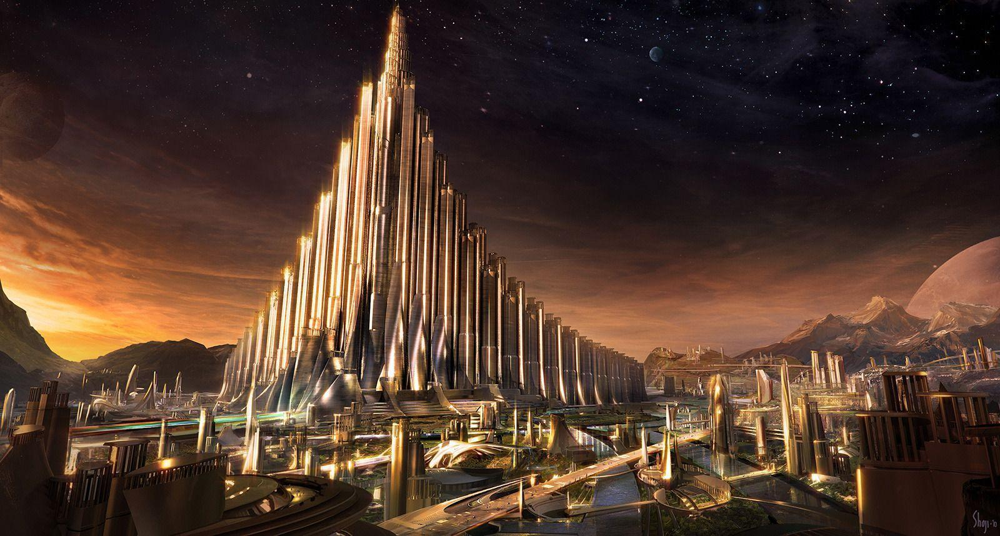

Asgardian Gold
Experience the epic intensity of Ragnarok Roast.

Ingredients
- Asgardian Gold coffee beans
- Filtered water
Recipe
- Start by grinding Asgardian Gold coffee beans to a medium consistency.
- Measure 2 tablespoons of ground coffee per 6 ounces of filtered water.
- Bring the filtered water to a boil and let it cool slightly for a moment.
- Place the ground coffee into your preferred brewing device, such as a drip coffee maker or a French press.
- Slowly pour the hot water over the coffee grounds, ensuring they are fully saturated.
- Let the coffee brew for approximately 4-5 minutes, allowing the flavors to fully develop.
- If using a French press, gently press the plunger down to separate the coffee grounds from the brewed coffee. If using a drip coffee maker, let the brewing process complete.
- Pour the Asgardian Gold coffee into your favorite mug or cup.
- Optionally, you can add sweetener, milk, or cream according to your taste preference.
- Take a moment to savor the enchanting golden brew of Asgardian Gold, and enjoy the rich flavors it offers.